Activity1
UMLActivity
Untitled
::
Activity1
Description
none
Diagrams

ActivityDiagramConnexion
Groups
Visiteur
SI
BDD
Nodes
InitialNode1
Cliquer sur se connecter
Demander les informations de connexion
saisir ces informations de connexion
Préparer une requête
Envoyer la requête
vérifier si le compte existe
DecisionNode1
afficher un message d'erreur les informations sont incorrectes
FlowFinalNode1
DecisionNode2
Afficher un message d'erreur les informations sont incorrectes
Connecter
ForkNode1
ActivityFinalNode1
Afficher un message Connecté
FlowFinalNode2
FlowFinalNode3
DecisionNode3
Afficher message compte non activé
FlowFinalNode4
Edges
(InitialNode1→Cliquer sur se connecter)
(Cliquer sur se connecter→Demander les informations de connexion)
(Demander les informations de connexion→saisir ces informations de connexion)
(saisir ces informations de connexion→valider)
(valider→Préparer une requête)
(Préparer une requête→Envoyer la requête)
(Envoyer la requête→exécuter la requête)
(exécuter la requête→vérifier si le compte existe)
(vérifier si le compte existe→DecisionNode1)
n'existe pas (DecisionNode1→afficher un message d'erreur les informations sont incorrectes)
(afficher un message d'erreur les informations sont incorrectes→FlowFinalNode1)
(Vérifier le mot de passe→DecisionNode2)
password incorrect (DecisionNode2→Afficher un message d'erreur les informations sont incorrectes)
Password ok (DecisionNode2→ForkNode1)
(ForkNode1→Connecter)
(Connecter→ActivityFinalNode1)
(ForkNode1→Afficher un message Connecté)
(Afficher un message Connecté→FlowFinalNode2)
(Afficher un message d'erreur les informations sont incorrectes→FlowFinalNode3)
existe (DecisionNode1→Vérifier si le compte est activé)
(Vérifier si le compte est activé→DecisionNode3)
activé (DecisionNode3→Vérifier le mot de passe)
non activé (DecisionNode3→Afficher message compte non activé)
(Afficher message compte non activé→Renvoyer mail d'activation)
(Renvoyer mail d'activation→FlowFinalNode4)
Properties
Name
Value
name
Activity1
stereotype
null
visibility
public
isReentrant
true
isReadOnly
false
isSingleExecution
false
Owned Elements
ActivityDiagramConnexion